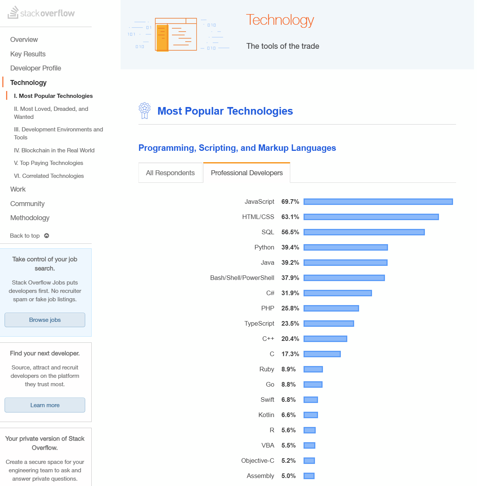

퓨어 자바스크립트에 주목해야될 필요가 있어보인다.
파이썬으로 웹개발을 해도 프론트는 필요하고
자바로 개발해도 프론트는 필요하고
PHP로 개발해도 프론트는 필요하고
Ruby로 개발해도 프론트는 필요하기 때문일듯.
결국, 쏟아져 나오는 웹 사이트와 리뉴얼 되는 웹 사이트의
어마어마한 프론트쪽 개발을, 수요공급 법칙에 의해
공급이 수요를 뒷받침 해주지 못하고 있는 상황.
곰곰히 생각해 보면..
자바 스크립트로 대충 만드는건 아무나 할 수 있다.
자바 스크립트로 멋지게 천천히 만드는건 아무나 할 수 있다.
자바스크립트로 멋지게 빠르게 만드는건 아무나 할 수 없다.
또한가지 생각해볼 점은..
인기가 있고, 본인이 정말 좋아서 하는경우도 있겠지만
본인이 정말 좋아하지 않지만 인기 때문에 언어를 다루는 경우도 종종 있는데,
굳이 그렇게 안해도 될것 같다는 것이다.
대세에 편승하지 않고
반대로 생각해 봤을때 점유율 낮지만 본인이 좋아하는 언어를 익히는것도
어찌보면 수요공급 법칙에 따라서 생각해 봤을때 괜찮을것도 같다.
(희소성 쩌는 엔지니어가 연봉이 보통 높다)
그리고 IDE와 에디터..
개발자에게 있어서 IDE나 텍스트 에디터는 참 중요한데
(현장에 따라서 남들과 비슷한것을 쓰는것이 좋을때도 있어서..)
자바나 자바스크립트 linux 를 다루는 사람 입장에서는
몇년전만 하더라도 Eclipse나 서브라임 텍스트 vim정도 였던것이
VSCODE의 등장으로 완전히 시장이 바뀌어 버린것 같다.
(가볍고 빠르고 유저지향적 인터페이스 여러OS에서 다 돌아감 등등등 장점 많음)
조금 놀란것은, VIM만 쓰는 엔지니어들은 특유의 자존심쩔고
나 공돌이임 ㅎㅎ 나 외계인임 ㅎㅎ 하는 사람들이 많은데
(일본에서는 고액 연봉자의 공통점이 VIM에디터를 주력으로 쓰는사람이란 소리도..)
이들 조차도 VSCODE로 많이 넘어갔다는 것이다.
어쨌건 저쨌건 VSCODE는 반드시 사용해야될 IDE겸 text에디터가 된듯.
InteliJ와 코틀린..
이놈은 아직 설치만 해놓고 제대로 써보지는 않았지만
구글이 코틀린 이라는 언어를 적극적으로 밀고 있고
InteliJ개발사에서 개발한 언어가 코틀린(JVM에서 구동하며 JAVA와 호환성쩜) 이기 때문에
셋트로 같이 공부해두면 두고두고 좋을것 같다라는 생각…
자바처럼 웹/앱 다 가능하며,
소스 리딩을 할때 루비와 파이썬처럼 직관적으로 보이는 차세대 언어